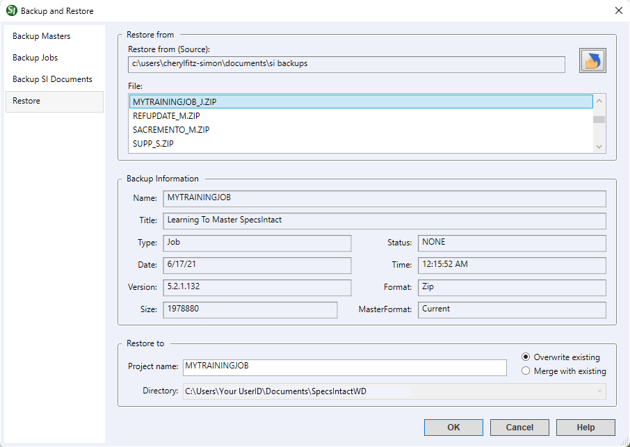

This command can also be executed from the SpecsIntact Explorer's Right-click menu.
The Backup and Restore command allows you to perform two key functions by enabling you to back up your MastersA collection of Masters consisting of the Unified Facility Guides Specifications (UFGS), local agency or company Masters, JobsA collection of projects, and SI Documents (e.g., Section TemplateIs an outline to be used as a guide in creating new specifications. The option to create Section templates on the Tools Menu or through Add Sections should be used to create unique section outlines, not new sections. New sections can be created for a Job or local Master. Revisions should not be used during the creation of a new Section from a Section Template., Supplemental Reference ListA custom file maintained by the user to include reference standards not found in the UFGS Master guide specifications) and allowing you to restore these files from previously created backup versions.
The Restore tab allows you to restore any of your backed-up files (e.g., Jobs, Masters, SI Documents) created during the Backup and Restore process.
 It is important to understand that utilizing the Change Destination button to designate an alternative backup directory will not result in the immediate display of the backup file contents within the directory selection interface. This is attributable to an inherent Windows characteristic of the underlying system control. The relevant backup file(s) will become accessible for selection upon returning to the primary Restore tab.
It is important to understand that utilizing the Change Destination button to designate an alternative backup directory will not result in the immediate display of the backup file contents within the directory selection interface. This is attributable to an inherent Windows characteristic of the underlying system control. The relevant backup file(s) will become accessible for selection upon returning to the primary Restore tab.
 Click the tabbed commands on the image below to see how to use each function.
Click the tabbed commands on the image below to see how to use each function.

- Restore From (Source) - Displays the current folder where your most recent backup of a Master, Job, or SI Documents is located. To select a different backup location for restoration, click the Change Destination button.
- File - Displays a list of available backup files found in the location specified in the Restore from (Source) field. If no backups have been made previously, or if the existing backups are stored in a different location than the one indicated, this list will appear empty.
- Backup Information - Displays detailed information about each backup file to provide key information captured during the backup process. The information includes the Name, Title, Type of file (e.g., Master, Job, Supplemental, or Templates), Status (e.g., Review Status (None, 30%, 60%, 90%, FINAL, or BiD) or Amendment Level (A, B, C, etc.)), Date, Time, Version (SpecsIntact version used when the backup was created), Format (Zip), Size (file) and the MasterFormat version information.
- Restore to - Displays the name of the selected backup file and the specific Working Directory path where it will be restored. If a Master or Job is already present in one or more of the connected Working Directories, the Job or Master name will appear in a red font as a warning. When multiple Working Directories are used, select the drop-down arrow to select a different restoration destination.
- Overwrite existing - This is the standard restoration method, which replaces existing files at the destination with the backed-up version. To avoid overwriting your current files, you can rename the backup in the Restore to area. Renaming allows you to easily compare the current and backed-up versions of your Master or Job.
- Merge with existing - Replaces all files of the same name and will add any files in the backup that do not exist in the same Working Directory version.
Standard Windows Commands
 The OK button will execute and save the selections made on all of the tabs.
The OK button will execute and save the selections made on all of the tabs.
 The Cancel button will close the window without recording any selections or changes entered.
The Cancel button will close the window without recording any selections or changes entered.
 The Help button will open the Help Topic for this window.
The Help button will open the Help Topic for this window.
How To Use This Feature
to Restore a Job, Master or SI Documents:
- In the SpecsIntact Explorer's Available Projects pane, perform one of the following:
- Right-click and select Backup and Restore
- Select the File menu and select Backup and Restore
- In the Backup and Restore window, select the Restore tab
- Below Restore from (Source), perform one of the following:
- Use the existing location
- Click the Change Destination button to browse and select a new location
- In the File pane, select the backup file to restore
- Below Restore to, perform the following:
- Use the existing Project name or change it if the project is in a different Working Directory (indicated by red font) or to avoid overwriting the existing project with the same name
- Use the default Overwrite existing or select Merge with existing
- Click OK
Additional Learning Tools
 Watch the Restore a Job or Master eLearning module within Chapter 8 - Additional Tools and Techniques.
Watch the Restore a Job or Master eLearning module within Chapter 8 - Additional Tools and Techniques.
Users are encouraged to visit the SpecsIntact Website's Support & Help Center for access to all of our User Tools, including Web-Based Help (containing Troubleshooting, Frequently Asked Questions (FAQs), Technical Notes, and Known Problems), eLearning Modules (video tutorials), and printable Guides.